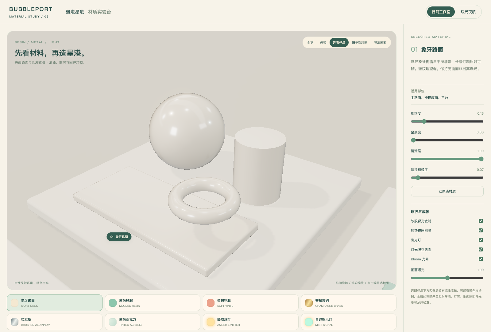
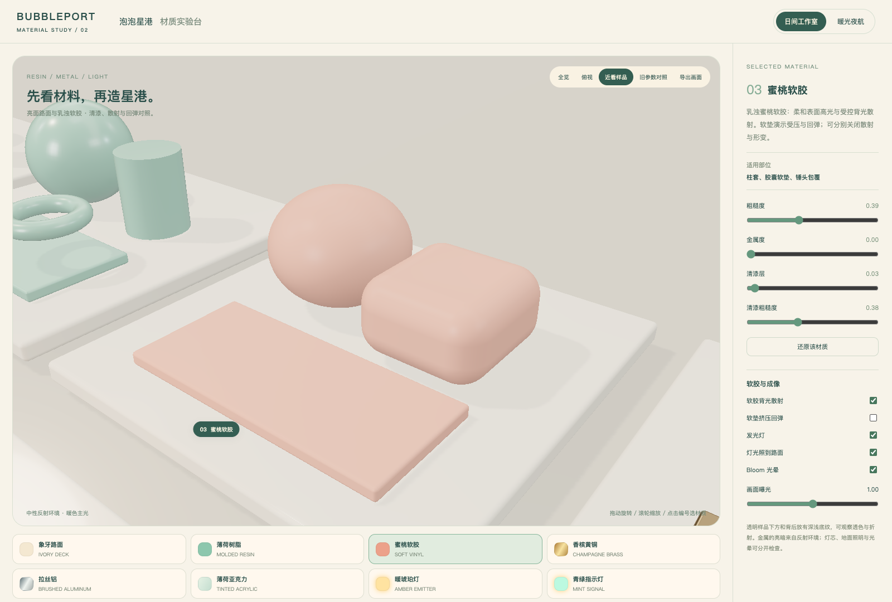
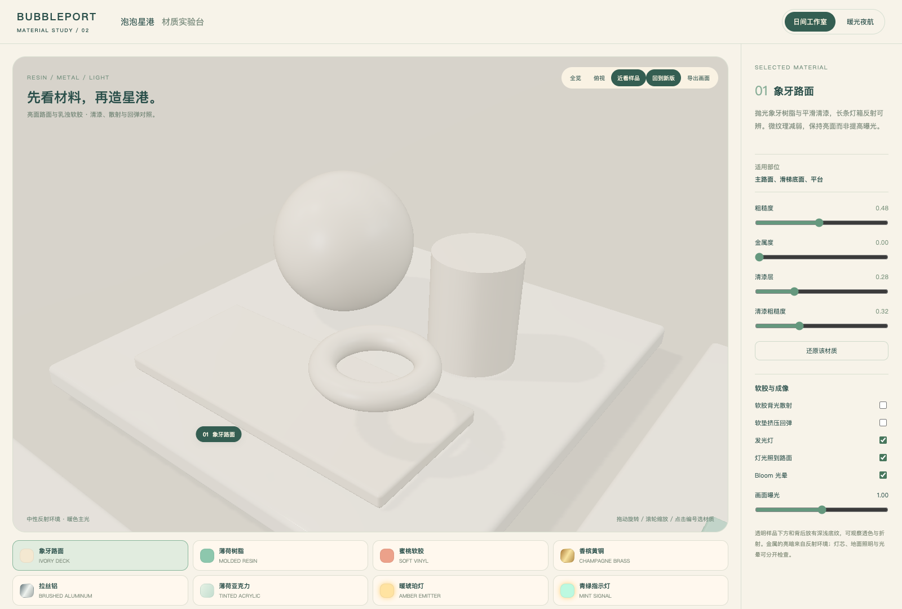
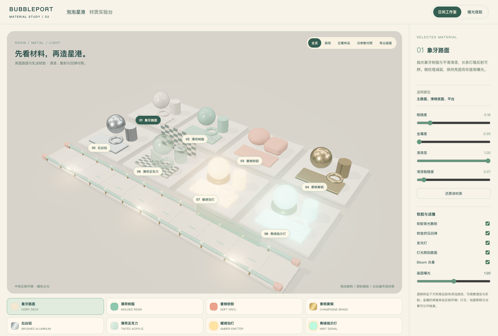

抛光象牙树脂 · 乳浊软胶 · 六种共用材质。源码、预设与28张贴图集中在本目录。

粗糙度 .16，清漆 1，清漆粗糙度 .065；弱微纹理与长条反射。

低清漆、柔和高光、背光散射近似；样品增加受压凹陷和回弹。

相同几何、照明和曝光，仅切换旧版路面与软胶参数。

金属、亚克力与两种灯色沿用同一组PBR样板。
Lost Marbles研究材料保留在总库的lm分类。本目录是原创样板；散射为实时近似，回弹为展示动画，均不是离线体积SSS或真实软体碰撞。